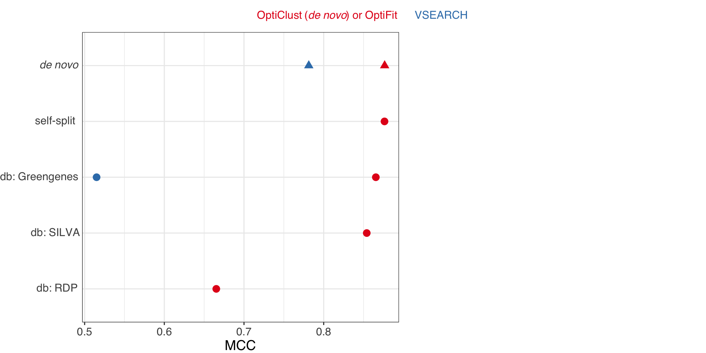
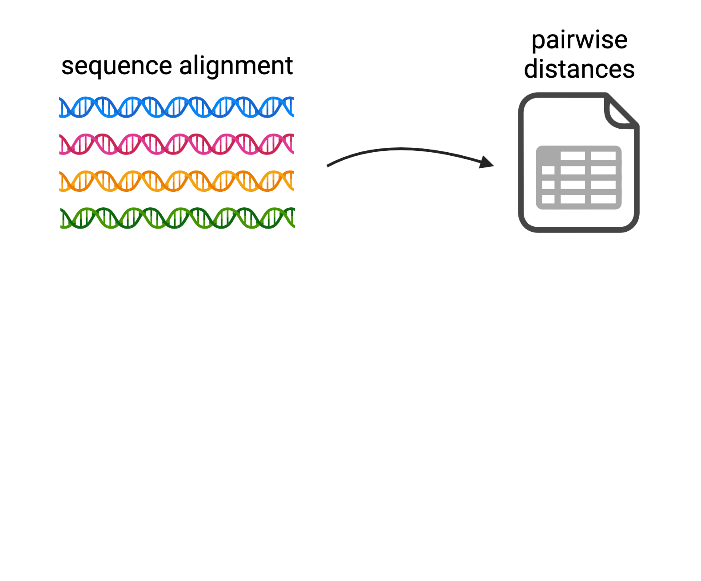
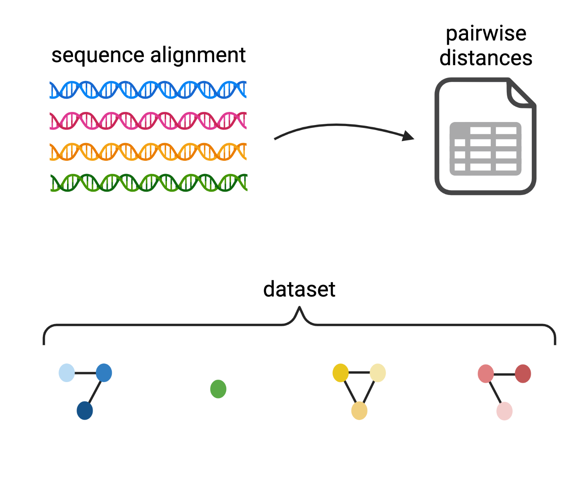
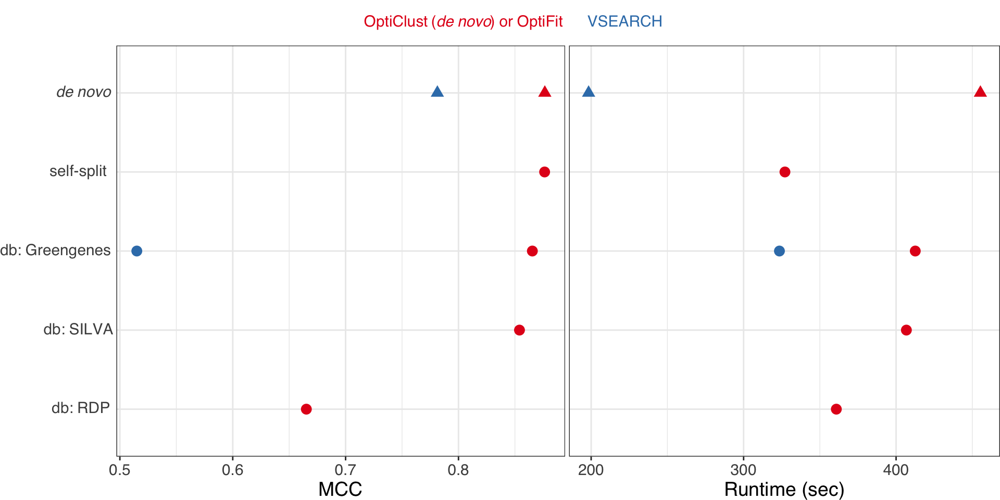
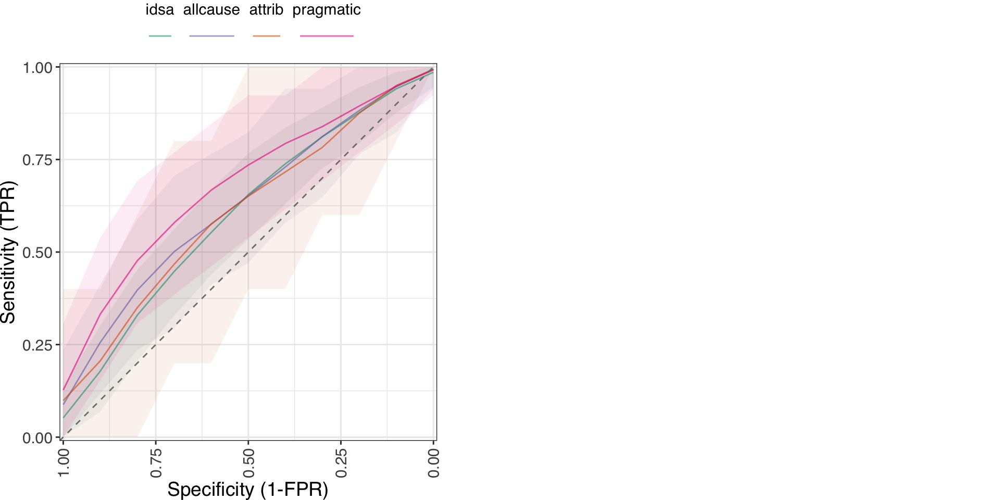
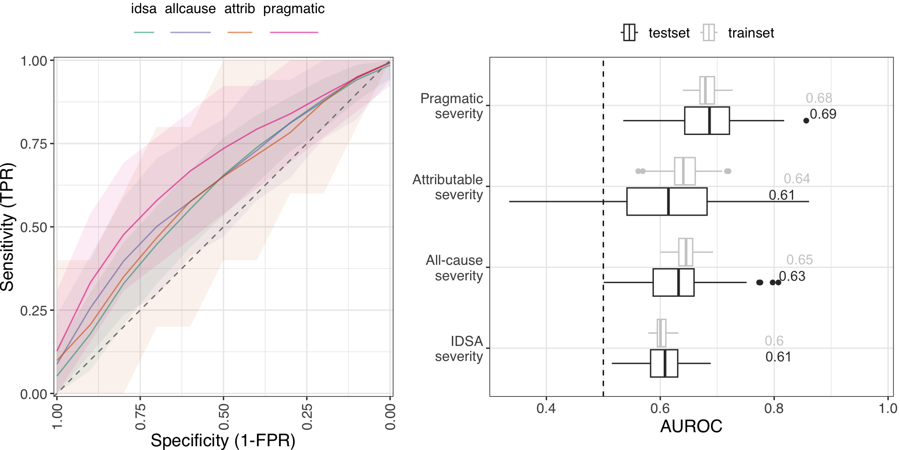
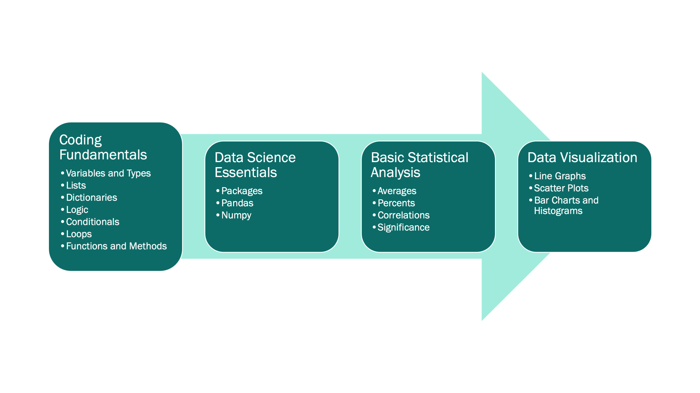
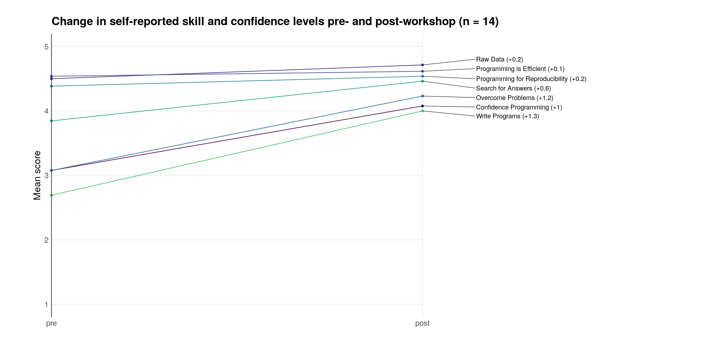
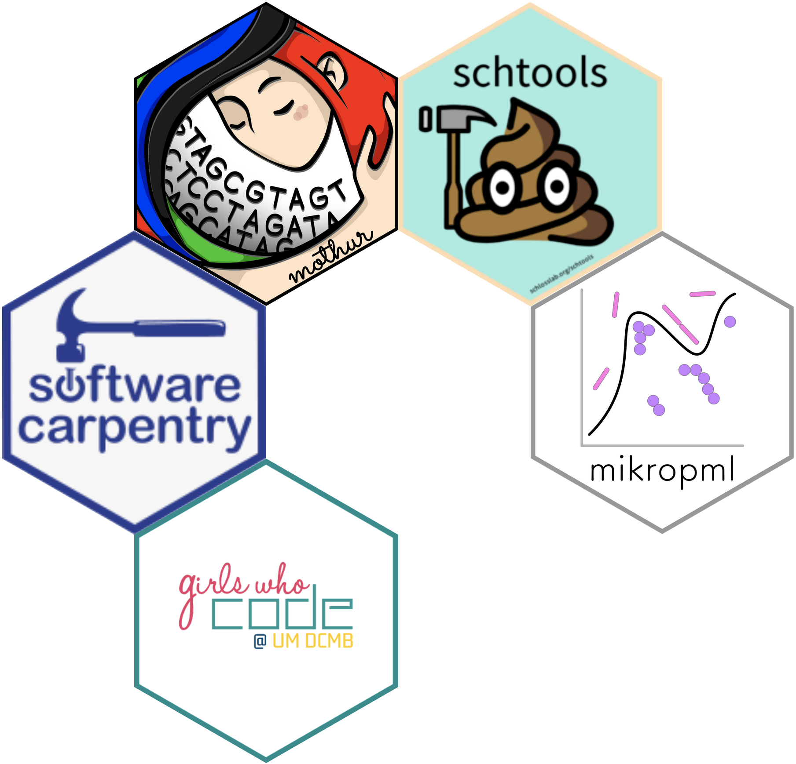

Improving machine learning models for microbiome analysis
and democratizing data science along the way
Kelly Sovacool
Jun 22, 2023
What is a microbiome?
Berg et al. (2020). Microbiome
The human gut microbiome changes during diseases
- Irritable bowel diseases
- Colorectal cancer
- Clostridioides difficile infection
Open problems and opportunities
- Understand the mechanistic role of the gut microbiome in gut diseases.
- Identify biomarkers to improve diagnostic and prognostic tools.
The human gut microbiome changes during C. difficile infection
Created with BioRender
How to study the gut microbiome
Created with BioRender
Machine learning for science & health care
Supervised machine learning (ML) - computational techniques that identify patterns in large datasets to classify samples or predict outcomes.
Applications:
- Diagnose colorectal cancer early and less invasively than colonoscopy.
- Identify COVID-19 patients at risk of clinical deterioration.
- Predict severe outcomes of C. difficile infections.
Overview
- Improve methods for processing microbiome data.
- Predict severe C. difficile infections from gut microbiome composition.
- Contribute to democratizing data science.
How to characterize microbiomes
Adapted from: Lee (2019). JOSE
Difficulties in bacterial taxonomy
- Inconsistent species concept for microbes.
- Most microbes are not easy to culture, thus are not well-characterized.
- Many bacteria have multiple copies of target genes for amplicon sequencing.
Created with BioRender
Clustering amplicon sequences into Operational Taxonomic Units (OTUs)
De novo OptiClust algorithm

Created with BioRender
Clustering amplicon sequences into Operational Taxonomic Units (OTUs)
De novo OptiClust algorithm
Created with BioRender

Clustering amplicon sequences into Operational Taxonomic Units (OTUs)
De novo OptiClust algorithm

Created with BioRender
Clustering amplicon sequences into Operational Taxonomic Units (OTUs)
De novo OptiClust algorithm
Created with BioRender
Clustering amplicon sequences into Operational Taxonomic Units (OTUs)
Reference-based algorithm
Created with BioRender
Clustering amplicon sequences into Operational Taxonomic Units (OTUs)
Reference-based algorithm
Created with BioRender
Clustering amplicon sequences into Operational Taxonomic Units (OTUs)
Reference-based algorithm
Created with BioRender
OptiFit
reference-based clustering to de novo OTUs

Created with BioRender
OptiFit
reference-based clustering to de novo OTUs
Created with BioRender
OptiFit
reference-based clustering to de novo OTUs
Created with BioRender
OptiFit benchmarking results
Sovacool et al. (2022). mSphere
OptiFit benchmarking results

Sovacool et al. (2022). mSphere
OptiFit improves reference-based clustering
- New method to use de novo OTUs as a reference for new sequences.
- Clusters sequences at the same quality as de novo methods.
- Outperforms other reference-based methods in terms of quality.
- Trade-off: longer run time.
- Follow-up: OptiFit is suitable for machine learning.
Overview
- Improve methods for processing microbiome data.
- Predict severe C. difficile infections from gut microbiome composition.
- Contribute to democratizing data science.
C. difficile infection (CDI)
Clinical data predict complicated CDI
median AUROC: 0.69
- Motivation: inform clinicians on which CDI patients may be most at risk of severe outcomes in order to tailor treatments.
- Electronic health record (EHR) data used as features to predict whether disease-related complications occurred.
Li et al. (2019). OFID
Can we use the composition of the gut microbiome to predict CDI severity?
How to define CDI severity
1,257 CDI patient stool samples collected on the day of diagnosis
| Severity | n | % severe |
|---|---|---|
| IDSA | 1,072 | 34.2 |
| All-cause | 1,218 | 7.1 |
| Attributable | 1,178 | 2.2 |
| Severity | n | % severe |
|---|---|---|
| IDSA | 1,072 | 34.2 |
| All-cause | 1,218 | 7.1 |
| Attributable | 1,178 | 2.2 |
| Pragmatic | 1,218 | 5.4 |
Training machine learning models

Topçuoğlu et al. (2020). mBio
Model performance
Random Forests trained on 100x train/test splits of each dataset
Model performance
Random Forests trained on 100x train/test splits of each dataset
EHR-based models from Li et al.
Median AUROC: 0.69
Model performance on severe cases
Random Forests trained on 100x train/test splits of each dataset
Top OTUs contributing to model performance
Clinical value of prediction models
- The pragmatic severity model performed just as well as an EHR-based model.
- The most important OTUs for model performance concord with prior studies.
- Open question: would deploying EHR or OTU-based models improve clinical outcomes?
Overview
- Improve methods for processing microbiome data.
- Predict severe C. difficile infections from gut microbiome composition.
- Contribute to democratizing data science.
Democratizing data science
- Make data science tools more accessible to researchers from non-computational backgrounds.
- Disseminate user-friendly tools & curricula with open source licenses.
- Promote diversity, equity, and inclusion in data science.
Addressing the gender gap in STEM
- 18% of Computer Science degrees are awarded to women.
- U-M Bioinformatics PhD graduates: 25% women as of 2021.
- Most of us (women in U-M Bioinformatics) didn’t learn to code until college or later.
Solution: start a Girls Who Code club focused on teaching coding for data science to high school students.

Intro to Python for Data Science
for Girls Who Code at U-M DCMB
Duda* and Sovacool* et al. (2021). JOSE
Impact of Girls Who Code
- 135+ graduates of the club & summer camp.
- Graduates improve skills in coding, problem solving, collaboration, and self-confidence.
Because of GWC, I learned about bioinformatics. I was very interested in it, because it combined my interests in programming and research… I’m pretty certain I want to go into bioinformatics now.
I plan to go to college for Computer Science and get a robotics minor when my college offers it. GWC has inspired me to consider pursuing a Masters or PhD in CS as well as take some electives in Data Science.
Coding for Reproducible Research
- 34,000+ learners have attended Software Carpentry workshops worldwide since 2010.
- U-M instance of Software Carpentry active since 2016.

https://software-carpentry.org/lessons/
Integrated workshop curriculum
teaching R, the Unix shell, and Git
Lapp* and Sovacool* et al. (2022). JOSE
Impact of Software Carpentry
Pilot workshop pre & post survey
Lapp* and Sovacool* et al. (2022). JOSE
Reproducible ML pipelines with mikropml
"meek-rope em el"

Topçuoğlu*, Lapp*, Sovacool* et al. (2021). JOSS
mikropml impact
CRAN:
conda-forge: 
Summary
- Improved OTU clustering algorithms to enable machine learning for microbiome research.
- Applied machine learning to predict severe C. difficile infections, demonstrating similar performance as models trained on Electronic Health Records.
- Contributed to democratizing data science for three key audiences.
post-PhD plans
Bioinformatics Software Engineer for Frederick National Lab (NIH/NCI)
Acknowledgements
Schloss Lab
Patrick Schloss
Megan Coden
Sarah Lucas
Courtney Armour
Allison Mason
Adena Collens
alumni
Nick Lesniak
Sarah Tomkovich
Sarah Westcott
Katie McBride
Jay Moltzau
Begüm Topçuoğlu
Joshua Stough
Will Close
Ada Hagan
Kaitlin Flynn
Curricula contributors
Marlena Duda
Zena Lapp
Brooke Wolford
Negar Farzaneh
Vy Nguyen
Sarah Haynes
Hayley Falk
Katie Furman
Logan Walker
Rucheng Diao
Morgan Oneka
Audrey Drotos
Gabrielle Dotson
April Kriebel
Lucy Meng
Stephanie Theide
Dana King
Catherine Barnier
Matthew Flickinger
Jule Krüger
Maya Lapp
Jason Tallant
Collaborators
& Committee
Krishna Rao
Vince Young
Jenna Wiens
Greg Dick
Funding
NIH T32 GM070449
NIH U01AI124255
Phrases included
- “Pat’s the best”
- “Pat is a delight.”
- “Wow this is incredible. Pat is literally a hero!”
- “Your PI is amazing”
Phrases included
- “Pat’s the best”
- “Pat is a delight.”
- “Wow this is incredible. Pat is literally a hero!”
- “Your PI is amazing”
